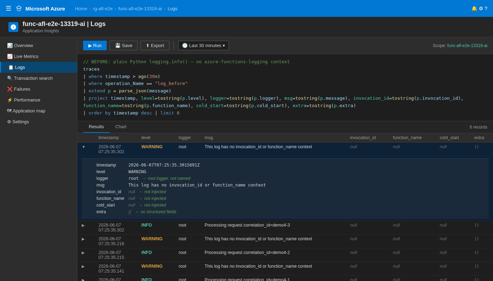
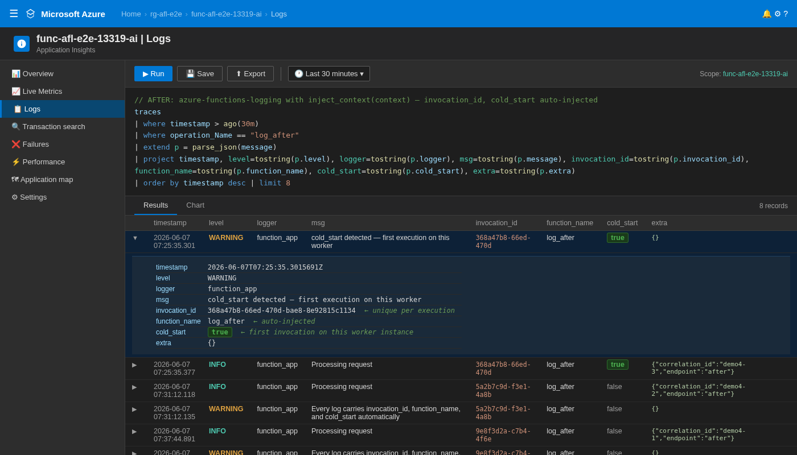
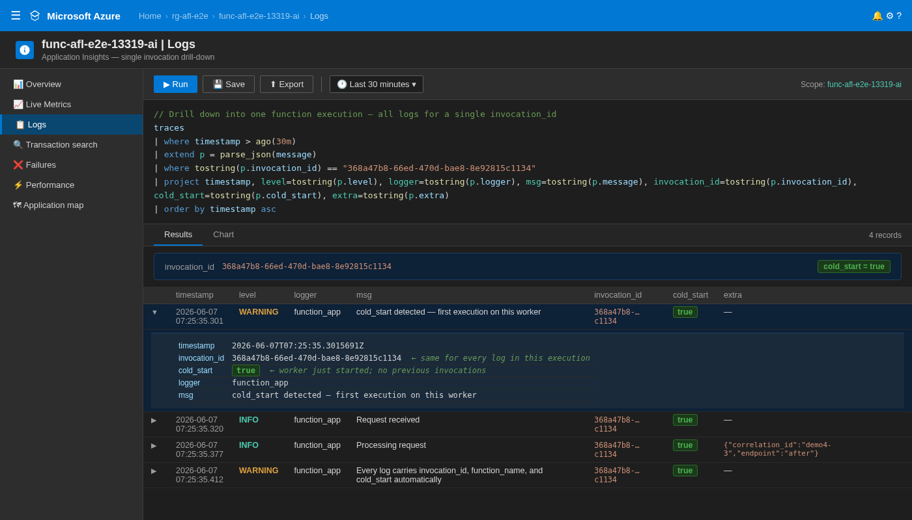
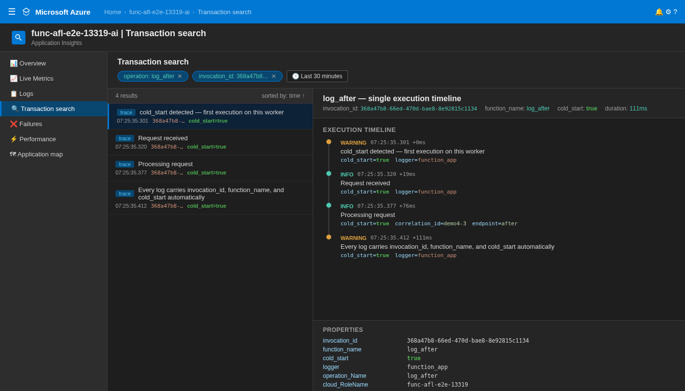

Deploy to Azure¶
This guide walks you through deploying azure-functions-logging to Azure Functions, step by step, with logging verification included.
It is written for Python developers who are new to Azure.
Who this guide is for¶
You are comfortable with Python and pip, and your app works locally.
You have little or no Azure experience and want a copy-paste path to deploy and validate structured logs.
What you are deploying¶
You are deploying the examples/e2e_app sample from azure-functions-logging v0.4.1.
The sample exposes two HTTP functions:
GET /api/healthfor basic health checksGET /api/logmeto emit structured logs withcorrelation_id
This deployment is logging-focused:
- Application logs are emitted as structured JSON using
afl.JsonFormatter() - Invocation context (
invocation_id,function_name,trace_id,cold_start) is injected via@afl.with_context - Logs are verified in both live stream and Application Insights (with KQL)
Azure concepts you need for this guide¶
New to plans? Read Choose an Azure Functions Hosting Plan.
| Term | What it means |
|---|---|
| Function App | Your deployed Python app in Azure. It contains one or more functions. |
| Hosting plan | Defines scaling, cold starts, timeout behavior, and cost. |
| Resource Group | A container for related resources. Delete it to remove everything in one command. |
| Storage Account | Required by Azure Functions runtime for internal state and operations. |
| Log Analytics Workspace | Data platform used by workspace-based Application Insights. |
| Application Insights | Telemetry service where traces, requests, and queryable logs are stored. |
Recommended plan for this repo¶
| Default plan | Flex Consumption |
| Why | Lowest entry cost, scale-to-zero, and enough runtime for most Python function workloads. |
| Important for this repo | Keep explicit Application Insights + Log Analytics provisioning so log analysis is predictable. |
| Switch plans if | You need lower cold-start latency or heavier always-on workloads (Premium/Dedicated). |
Before you start¶
| Requirement | How to check | Install if missing |
|---|---|---|
| Azure account | portal.azure.com | Create free account |
| Azure CLI | az --version |
Install Azure CLI |
| Azure Functions Core Tools v4 | func --version |
Install Core Tools |
| Python 3.10-3.13 | python --version |
python.org |
| Working local app | func start then call endpoints |
Fix local errors before deploying |
Start in the sample app directory:
cd /data/GitHub/azure-functions-logging/examples/e2e_app
python3 -m pip install --upgrade pip
pip install -r requirements.txt
Read these warnings before provisioning¶
- Storage account names must be globally unique, lowercase, and 3–24 characters.
- Use one region for all resources in this guide to avoid avoidable latency and configuration drift.
- Log streaming is a quick runtime check, not full observability; use Application Insights queries for real analysis.
- Application Insights ingestion is not always immediate; expect a short delay before traces appear.
- Log levels can differ between local and Azure host pipelines. Keep explicit logger level configuration and verify in Azure.
Deploy the app (step by step)¶
Step 1 — Sign in and set your subscription¶
az login
SUBSCRIPTION_ID=$(az account show --query id --output tsv)
az account set --subscription "$SUBSCRIPTION_ID"
If you have multiple subscriptions, run az account list -o table and set the one you want.
Step 2 — Define deployment variables¶
RESOURCE_GROUP="rg-afl-e2e"
LOCATION="eastus"
STORAGE_ACCOUNT="stafle2e$(date +%s | tail -c 6)"
LOG_ANALYTICS_WORKSPACE="log-afl-e2e"
APP_INSIGHTS_NAME="appi-afl-e2e"
FUNCTIONAPP_NAME="func-afl-e2e"
Use a region where Flex Consumption is supported:
Step 3 — Create Azure resources for runtime and observability¶
az group create \
--name "$RESOURCE_GROUP" \
--location "$LOCATION"
az storage account create \
--name "$STORAGE_ACCOUNT" \
--resource-group "$RESOURCE_GROUP" \
--location "$LOCATION" \
--sku Standard_LRS \
--kind StorageV2
az monitor log-analytics workspace create \
--resource-group "$RESOURCE_GROUP" \
--workspace-name "$LOG_ANALYTICS_WORKSPACE" \
--location "$LOCATION"
WORKSPACE_ID=$(az monitor log-analytics workspace show \
--resource-group "$RESOURCE_GROUP" \
--workspace-name "$LOG_ANALYTICS_WORKSPACE" \
--query id \
--output tsv)
az monitor app-insights component create \
--app "$APP_INSIGHTS_NAME" \
--resource-group "$RESOURCE_GROUP" \
--location "$LOCATION" \
--kind web \
--application-type web \
--workspace "$WORKSPACE_ID"
Step 4 — Code changes for Azure deployment¶
The default afl.setup_logging() behavior in Azure does not automatically force JSON output in host-managed handlers.
Use functions_formatter=afl.JsonFormatter() so emitted logs are structured and consistent.
Update function_app.py to this pattern:
"""E2E test function app for azure-functions-logging."""
from __future__ import annotations
import json
import logging
import azure.functions as func
import azure_functions_logging as afl
# Use JsonFormatter for structured NDJSON output in Azure
afl.setup_logging(functions_formatter=afl.JsonFormatter())
app = func.FunctionApp()
@app.route(route="health", auth_level=func.AuthLevel.ANONYMOUS)
def health(req: func.HttpRequest) -> func.HttpResponse:
return func.HttpResponse(json.dumps({"status": "ok"}), mimetype="application/json")
@app.route(route="logme", auth_level=func.AuthLevel.ANONYMOUS)
@afl.with_context
def logme(req: func.HttpRequest, context: func.Context) -> func.HttpResponse:
logger = afl.get_logger(__name__)
correlation_id = req.params.get("correlation_id", "e2e-test")
logger.info("e2e log entry", extra={"correlation_id": correlation_id})
logging.info("e2e stdlib log: correlation_id=%s", correlation_id)
return func.HttpResponse(
json.dumps({"logged": True, "correlation_id": correlation_id}),
mimetype="application/json",
)
Ensure host.json disables sampling while you verify logs:
{
"version": "2.0",
"logging": {
"applicationInsights": {
"samplingSettings": {
"isEnabled": false
}
}
},
"extensionBundle": {
"id": "Microsoft.Azure.Functions.ExtensionBundle",
"version": "[4.*, 5.0.0)"
}
}
Step 5 — Create the Function App (Flex Consumption)¶
az functionapp create \
--name "$FUNCTIONAPP_NAME" \
--resource-group "$RESOURCE_GROUP" \
--storage-account "$STORAGE_ACCOUNT" \
--flexconsumption-location "$LOCATION" \
--runtime python \
--runtime-version 3.11 \
--functions-version 4 \
--app-insights "$APP_INSIGHTS_NAME"
Step 6 — Set required app settings¶
az functionapp config appsettings set \
--name "$FUNCTIONAPP_NAME" \
--resource-group "$RESOURCE_GROUP" \
--settings FUNCTIONS_WORKER_RUNTIME=python
Step 7 — Publish the code¶
Run this from examples/e2e_app:
First deployment often takes a few minutes due to remote build.
Step 8 — Verify deployed endpoints¶
BASE_URL="https://$FUNCTIONAPP_NAME.azurewebsites.net"
curl -i -s "$BASE_URL/api/health"
curl -i -s "$BASE_URL/api/logme?correlation_id=demo-123"
Expected response bodies:
Watch logs live¶
Use log streaming right after a request to verify JSON log lines are emitted:
In another terminal, trigger the logging endpoint:
You should see host lines plus an NDJSON line similar to:
{"timestamp":"2025-01-15T10:35:00.123456+00:00","level":"INFO","logger":"function_app","message":"e2e log entry","invocation_id":"ab2a5eb3-1f80-46ea-a818-601ca6ed1111","function_name":"logme","trace_id":null,"cold_start":null,"exception":null,"extra":{"correlation_id":"stream-check-001"}}
If this line is not JSON, re-check Step 4 (afl.JsonFormatter()).
Inspect traces and requests¶
Get the Application Insights App ID:
APP_INSIGHTS_APP_ID=$(az monitor app-insights component show \
--app "$APP_INSIGHTS_NAME" \
--resource-group "$RESOURCE_GROUP" \
--query appId \
--output tsv)
Run a trace query by correlation_id:
az monitor app-insights query \
--app "$APP_INSIGHTS_APP_ID" \
--analytics-query "traces | where timestamp > ago(30m) | extend payload=parse_json(message) | where tostring(payload.extra.correlation_id) == 'demo-123' | project timestamp, severityLevel, logger=tostring(payload.logger), function_name=tostring(payload.function_name), invocation_id=tostring(payload.invocation_id), message=tostring(payload.message) | order by timestamp desc"
Run a request query to confirm function execution:
az monitor app-insights query \
--app "$APP_INSIGHTS_APP_ID" \
--analytics-query "requests | where timestamp > ago(30m) | where name has 'logme' or name has 'health' | project timestamp, name, resultCode, success, duration | order by timestamp desc"
Equivalent KQL for Azure portal Logs:
traces
| where timestamp > ago(30m)
| extend payload = parse_json(message)
| where tostring(payload.extra.correlation_id) == "demo-123"
| project timestamp, severityLevel, logger=tostring(payload.logger), function_name=tostring(payload.function_name), invocation_id=tostring(payload.invocation_id), message=tostring(payload.message)
| order by timestamp desc
requests
| where timestamp > ago(30m)
| where name has "logme" or name has "health"
| project timestamp, name, resultCode, success, duration
| order by timestamp desc
Application Insights — Before / After¶
The screenshots below show actual query results from a deployed function app running both
plain logging.info() and azure-functions-logging side by side.
Before (log_before — plain logging.info()):
Context fields are not injected — invocation_id, function_name, and cold_start
are absent from the JSON payload (shown as empty strings via tostring(payload.invocation_id)).
The correlation_id is embedded in the message string; it is searchable via
| where message contains "demo-123" but not as a structured field.

After (log_after — azure-functions-logging with inject_context(context)):
Every record carries invocation_id, function_name, and cold_start from inject_context().
correlation_id is a structured key in extra, enabling KQL filters like
| where parse_json(message).extra.correlation_id == "demo-123".

Drill-down by invocation_id — one query returns every log for a single execution, in chronological order:

Transaction Search — visual execution timeline showing cold_start, structured fields, and per-event elapsed time:

If you need a different plan¶
This guide uses Flex Consumption. If you need Premium or Dedicated, keep all logging steps the same and only replace Function App provisioning. See Choose an Azure Functions Hosting Plan.
Premium (EP1)¶
az functionapp plan create \
--name "${FUNCTIONAPP_NAME}-plan" \
--resource-group "$RESOURCE_GROUP" \
--location "$LOCATION" \
--sku EP1 \
--is-linux
az functionapp create \
--name "$FUNCTIONAPP_NAME" \
--resource-group "$RESOURCE_GROUP" \
--storage-account "$STORAGE_ACCOUNT" \
--plan "${FUNCTIONAPP_NAME}-plan" \
--runtime python \
--runtime-version 3.11 \
--os-type Linux \
--functions-version 4 \
--app-insights "$APP_INSIGHTS_NAME"
Dedicated (B1)¶
az appservice plan create \
--name "${FUNCTIONAPP_NAME}-plan" \
--resource-group "$RESOURCE_GROUP" \
--location "$LOCATION" \
--sku B1 \
--is-linux
az functionapp create \
--name "$FUNCTIONAPP_NAME" \
--resource-group "$RESOURCE_GROUP" \
--storage-account "$STORAGE_ACCOUNT" \
--plan "${FUNCTIONAPP_NAME}-plan" \
--runtime python \
--runtime-version 3.11 \
--os-type Linux \
--functions-version 4 \
--app-insights "$APP_INSIGHTS_NAME"
Troubleshooting¶
| Symptom | Usually means | How to fix |
|---|---|---|
| Logs not appearing in stream | Function not invoked, wrong app, or stream disconnected | Re-run func azure functionapp logstream "$FUNCTIONAPP_NAME" and hit /api/logme again |
| JSON format not working | afl.JsonFormatter() not applied in Azure path |
Re-check Step 4 in function_app.py and redeploy |
| Application Insights query returns empty | Ingestion delay, wrong App ID, or query window too short | Wait 2-5 minutes, verify APP_INSIGHTS_APP_ID, then increase to ago(2h) |
/api/logme returns 500 |
Runtime exception in app code | Stream logs, inspect traceback, fix code, and republish |
StorageAccountAlreadyTaken |
Storage account name not unique | Change $STORAGE_ACCOUNT suffix and retry provisioning |
LocationNotAvailableForResourceType |
Region does not support selected plan | Pick a supported region from az functionapp list-flexconsumption-locations -o table |
Quick diagnostics commands:
az functionapp show \
--name "$FUNCTIONAPP_NAME" \
--resource-group "$RESOURCE_GROUP" \
--query "{state:state, runtime:siteConfig.linuxFxVersion, hostNames:hostNames}"
func azure functionapp logstream "$FUNCTIONAPP_NAME"
Before opening an issue¶
If you're stuck, please include the following when opening a GitHub issue:
# 1. Azure CLI version
az --version
# 2. Functions Core Tools version
func --version
# 3. Python version
python --version
# 4. Package version
pip show azure-functions-logging
# 5. Function App status
az functionapp show \
--name "$FUNCTIONAPP_NAME" \
--resource-group "$RESOURCE_GROUP" \
--query "{state:state, runtime:siteConfig.linuxFxVersion}"
# 6. Application Insights status
az monitor app-insights component show \
--app "$APP_INSIGHTS_NAME" \
--resource-group "$RESOURCE_GROUP" \
--query "{instrumentationKey:instrumentationKey, provisioningState:provisioningState}"
# 7. Recent logs
func azure functionapp logstream "$FUNCTIONAPP_NAME"
Clean up resources¶
When finished testing, delete the whole resource group to stop charges:
Verify cleanup status:
Sources¶
- Azure Functions Python quickstart
- Azure Functions Core Tools reference
- Azure Functions monitoring and telemetry
- Application Insights for Azure Functions
- Flex Consumption plan
See Also¶
- Choose an Azure Functions Hosting Plan — Plan selection guide with decision tree
azure-functions-scaffoldazure-functions-validationazure-functions-openapiazure-functions-doctorazure-functions-langgraph